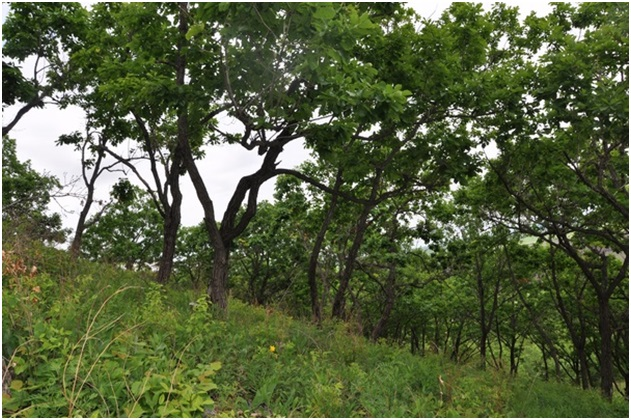
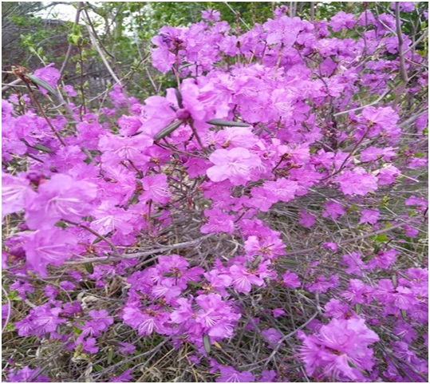

20. Биджанские остряки.
Ботанический памятник природы областного значения "Биджанские остряки" образован 26 ноября 1999 года в целях сохранения природного комплекса изолированного горного массива - места обитания растений, нуждающихся в особой охране и занесенных в Красную книгу Российской Федерации и Красную книгу Еврейской автономной области.
☘ Памятник природы расположен на территории Еврейской автономной области, на границе двух муниципальных районов - Ленинского и Октябрьского, в 22 км к юго-западу от села Биджан.
🌿 Памятник природы представляет собой изолированный низкогорный массив, входящий в систему островных гор Биджанские Остряки, с преобладающей вершиной горы Остряк (335,1 м), протяженностью около 1,5 км, максимальная ширина его достигает 600 м.
☘ На территории памятника природы произрастают редкие представители даурской остепненной флоры, которые нуждаются в особых мерах охраны и занесены в Красную книгу России и Красную книгу ЕАО: рододендрон даурский, секуринега полукустарниковая, нителистник сибирский, василистник ложнолепестковый, прострел китайский, трехбородник китайский, норичник амгунский, гюльдендштедтия весенняя, рапонтикум одноцветковый.
🌿 Наряду с представителями даурской флоры, в составе растительности отмечены виды, характерные для других растительных сообществ, относящиеся к редким и находящимся под угрозой исчезновения: виноградовник коротконожковый, виноградовник японский, пион молочноцветковый, диоскорея ниппонская, ширококолокольчик крупноцветковый, живокость крупноцветковая, змеевка Китагавы, тимьян Комарова, софора желтоватая, шиповник корейский.
☘На скальных обнажениях произрастает занесенный в Красную книгу России редкий вид папоротника - пиррозия длинночерешковая.

